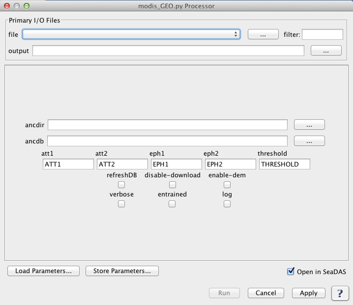

| modis_GEO.py | |
Creates a GEO file from MODIS L1A input files.
Location
Details
Command Line Usage
Tools -> OCSSW Processing -> modis_GEO.py
<modis_GEO.py creates a GEO file from MODIS L1A input files.
|  |
| UI Element Name | Type | Description | Required/Optional | Default Value |
| file | Text Field | MODIS_L1A_file name | Required | |
| output | Text Field | GEOFILE Output filename | Required | Generated by the program based on the input L1A file name |
| att1 | text | Input attitude file 1 (chronological) | Optional | ATT1 |
| att2 | text | Input attitude file 2 (chronological) | Optional | ATT2 |
| eph1 | text | Input ephemeris file 1 (chronological) | Optional | EPH1 |
| eph2 | text | Input ephemeris file 2 (chronological) | Optional | EPH2 |
| ancdir | text | Use a custom directory tree for ancillary files | Optional | |
| ancdb | text | Use a custom file for ancillary database. If full path not given, ANCDB is assumed to exist (or will be created) under $OCSSWROOT/log/. If $OCSSWROOT/log/ does not exist, ANCDB is assumed (or will be created) under the current working directory | Optional | |
| threshold | float | % of geo-populated pixels required to pass geocheck validation test | Optional | |
| refreshDB | boolean | Remove existing database records and re-query for ancillary files | Optional | false |
| disable_download | boolean | Disable download of ancillary files not found on hard disk | Optional | false |
| enable_dem | boolean | Enable MODIS terrain elevation correction | Optional | false |
| entrained | boolean | Use entrained attitude for Terra | Optional | false |
| log | boolean | Save processing log file(s) | Optional | false |
| UI Element Name | Type | Description |
| Browser Button | Button | Selects infile/ofile |
| Load Parameters ... | Button | Reads in previously saved parameters and populates the fields in GUI. |
| Save Parameters ... | Button | Saves the current arguments in GUI in a file. |
| Run | Button | Executes the modis_GEO.py command with arguments provided in the UI. |
| Cancel | Button | Closes current processor GUI. |
| Apply | Button | Makes current arguments effective. |
| Open in SeaDAS | Checkbox | If selected, the ofile will be added to the open products list right after its generation. |
| ? | Button | Displays the help content of the current command. |
Usage:
modis_GEO.py [OPTIONS] MODIS_L1A_file
or
modis_GEO.py --parfile=parameter_file [OPTIONS]
Options:
--version show program's version number and exit
-h, --help show this help message and exit
-p PARFILE, --parfile=PARFILE
Parameter file containing program inputs
-o GEOFILE, --output=GEOFILE
Output filename
-a ATT1, --att1=ATT1 Input attitude file 1 (chronological)
-A ATT2, --att2=ATT2 Input attitude file 2 (chronological)
-e EPH1, --eph1=EPH1 Input ephemeris file 1 (chronological)
-E EPH2, --eph2=EPH2 Input ephemeris file 2 (chronological)
--ancdir=ANCDIR Use a custom directory tree for ancillary files
--ancdb=ANCDB Use a custom file for ancillary database. If full path
not given, ANCDB is assumed to exist (or will be
created) under $OCSSWROOT/log/. If $OCSSWROOT/log/
does not exist, ANCDB is assumed (or will be created)
under the current working directory
--threshold=THRESHOLD
% of geo-populated pixels required to pass geocheck
validation test
-r, --refreshDB Remove existing database records and re-query for
ancillary files
--disable-download Disable download of ancillary files not found on hard
disk
-d, --enable-dem Enable MODIS terrain elevation correction
-v, --verbose print status messages
-n, --entrained Use entrained attitude for Terra
--log Save processing log file(s)